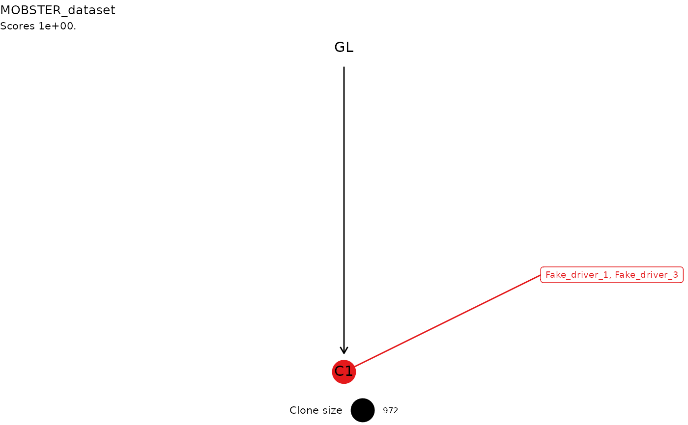
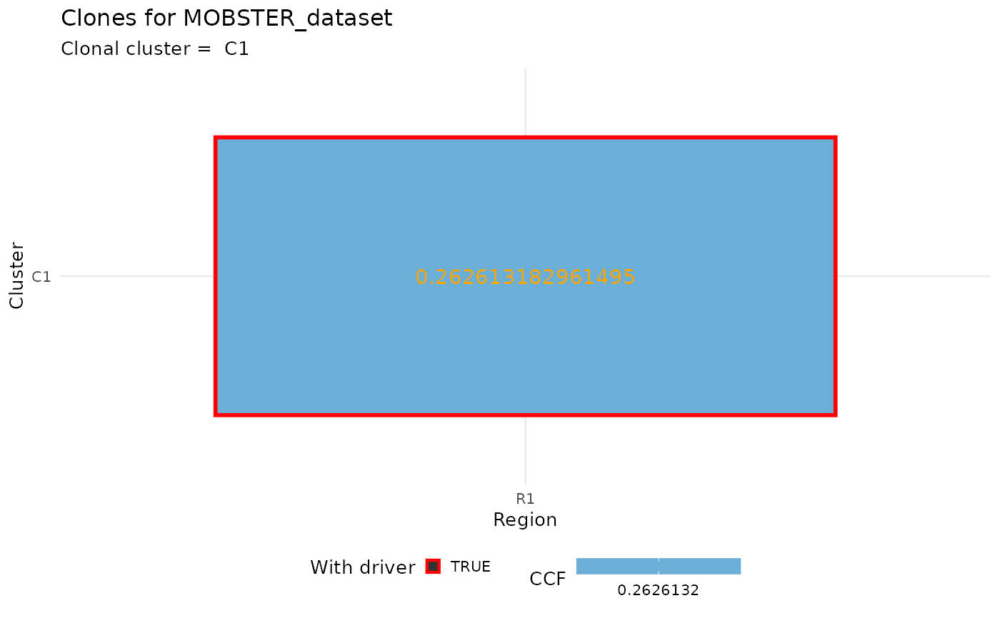
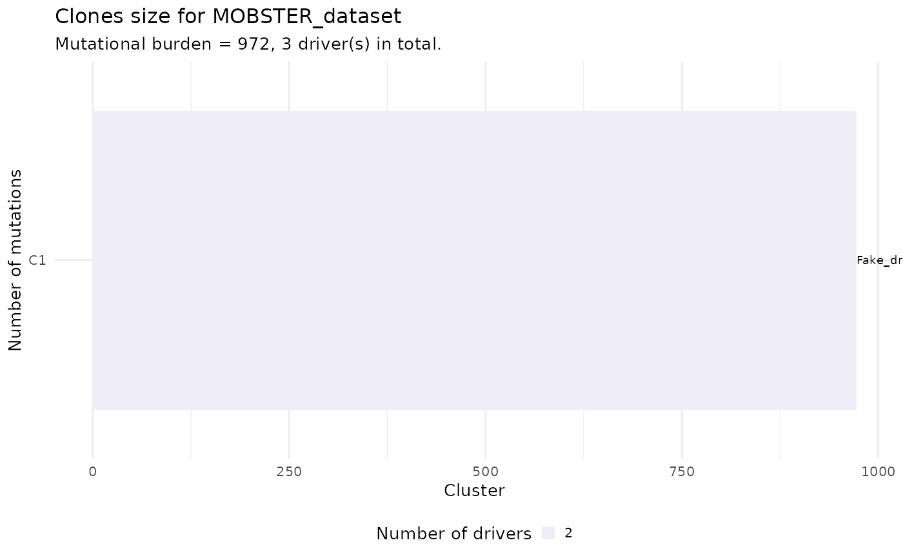

This function uses the output fit of MOBSTER
to create a call to ctree (https://caravagn.github.io/ctree/),
a package to create clone trees for cancer evolution models.
Creation of a clone tree requires annotations that are not usually
necessary for just a plain MOBSTER analyses. These annotations report the status of driver
and gene for each one of the input datapoints, and should
be part of data given in input for MOBSTER (so they should be in x$data).
MOBSTER clusters are only used if the come from a Beta distribtutions; that is the tail is removed. The clonal cluster is estimated from the cluster with the highest parameter value for the Beta peak.
The output is the result of calling the constructor ctree::cetrees
on the input clustering results x.
get_clone_trees(x, ...)
Arguments
| x | A MOBSTER fit. |
|---|---|
| ... | Extra parameters passed to the constructor |
Value
The output of the constructor ctree::cetrees.
Examples
# We take one of the released datasets x = mobster::LU4_lung_sample$best # Annotate some random mutation as driver, we need that to build the trees with ctree x$data$is_driver = FALSE x$data$is_driver[1:3] = TRUE x$data$driver_label = "" x$data$driver_label[1] = "Fake_driver_1" x$data$driver_label[2] = "Fake_driver_2" x$data$driver_label[3] = "Fake_driver_3" # Get the trees trees = get_clone_trees(x)#>#> [ ctree ~ generate clone trees for MOBSTER_dataset ] #> Sampler : 10000 (cutoff), 5000 (sampling), 100 (max store) #> # A tibble: 1 x 5 #> cluster R1 nMuts is.clonal is.driver #> <chr> <dbl> <dbl> <lgl> <lgl> #> 1 C1 0.263 972 TRUE TRUE #> #> Sampler: this model has 1 node, it has trivial models. #> ✔ Trees with non-zero sscore 1 storing 1 #>#>#> #>#> [ ctree - ctree rank 1/1 for MOBSTER_dataset ] #> #> # A tibble: 1 x 5 #> cluster R1 nMuts is.clonal is.driver #> <chr> <dbl> <dbl> <lgl> <lgl> #> 1 C1 0.263 972 TRUE TRUE #> #> Tree shape (drivers annotated) #> #> \-GL #> \-C1 [R1] :: Fake_driver_1, Fake_driver_3 #> #> Information transfer #> #> GL ---> Fake_driver_1 #> GL ---> Fake_driver_3 #> #> Tree score 1 #>#> Warning: Duplicated aesthetics after name standardisation: na.rm#> Warning: Removed 1 rows containing missing values (geom_point).